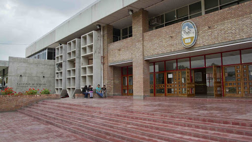

Victoria Cepeda
Lawyer & Researcher
Lawyer & Researcher
I'm a lawyer interested in Digital Law and Intellectual Property. I'm also a technology geek who hopes to become a web developer. I live in Mendoza, Argentina.
I graduated from Law School, UNCuyo, in 2020. Currently I'm working as a teacher's assistant in some university chairs there. Also, I took the FCE in 2013. I continue improving my English.
During the last years, I've taken many interesting courses, such as: Intellectual Property: Law and Policy at University of Pennsylvania, Arbitration and Mediation at WIPO and Web Development at LeWagon Argentina.

Currently, I'm taking part in two research projects at Universidad Nacional de Cuyo, which are related to real estate developments.
One of my dreams is to travel all over Argentina. I've already visited: Buenos Aires, Santa Fe, San Luis, Neuquén, Río Negro and Chubut. And I expected to visit the rest of the Provinces soon.
In my free time, the things I enjoy the most are: going to the mountain, doing some exercise, reading books, watching series and spending time with my family and friends.
My favourite books are: Eat, Pray, Love; Pride and Prejudice; Alice in Wonderland; The Little Prince; The Secret Garden and Rayuela. I recommend you to read them!